Monitor: Operación del dispositivo¶
Monitoriza datos operativos del dispositivo.
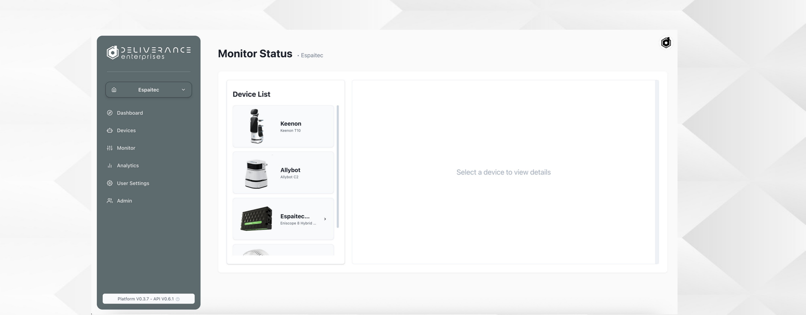
Selección del dispositivo¶
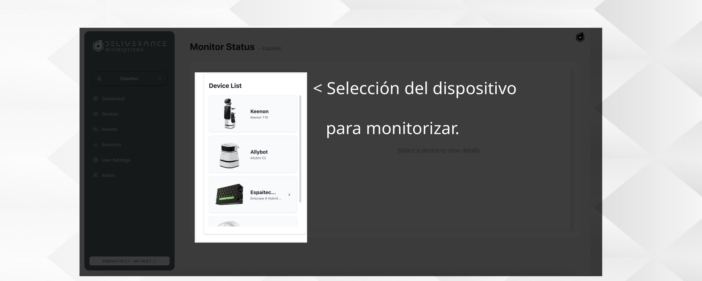
El panel izquierdo lista los dispositivos de la organización; al seleccionar uno se muestra su detalle a la derecha.
Detalle de operación¶
El contenido de esta página cambia según el tipo de dispositivo: un robot de reparto, un robot de limpieza, un sensor y un medidor de energía no muestran la misma información.
Robot de reparto¶
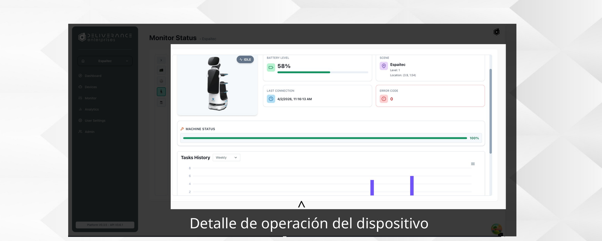
Batería, escena, última conexión, código de error, estado de la máquina e histórico de tareas.
Robot de limpieza¶
Además de lo anterior, añade los datos propios de la limpieza: niveles de agua (limpia y sucia) y consumibles (mopa, aspirador y cepillo), cada uno con su porcentaje de vida restante.
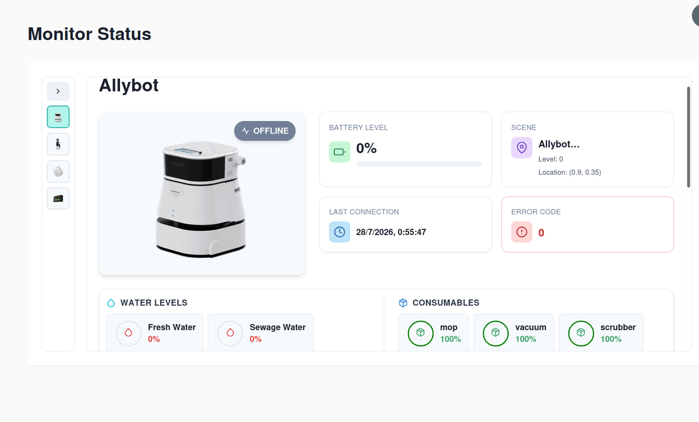
Sensor¶
Muestra las magnitudes que mide el sensor (temperatura, humedad, luz) y la fecha de la última lectura.
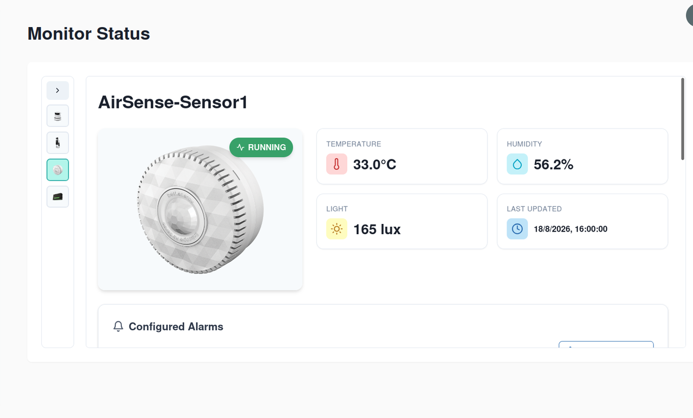
Más abajo, las lecturas históricas en gráficas, con una pestaña por magnitud (Temperature, Humidity, Light, Motion) y un selector de periodo.
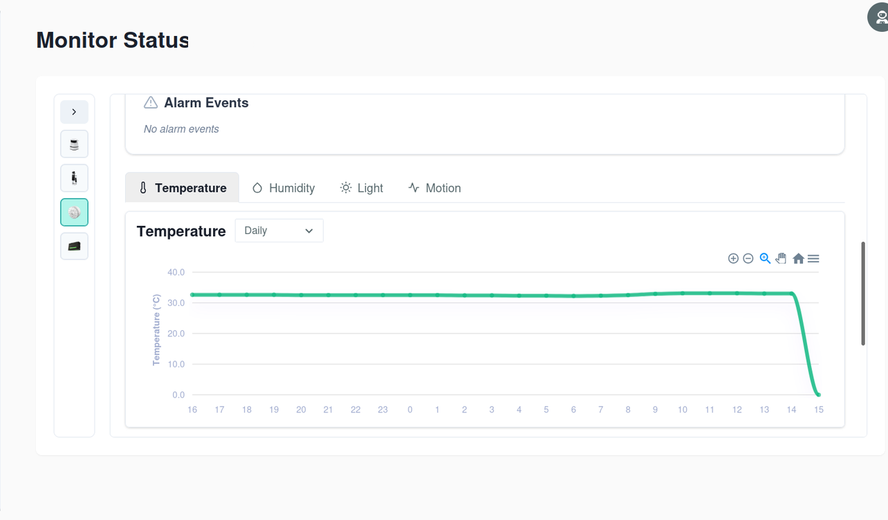
Medidor de energía¶
Muestra el consumo actual, la media y el pico de las últimas 24 horas.
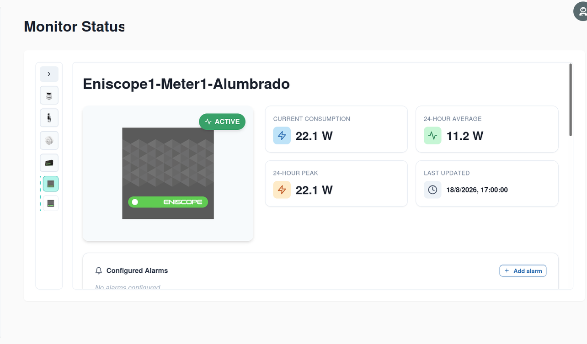
Debajo, la gráfica de Energy Consumption con una línea por punto de medida, y un Device Log con las últimas lecturas recibidas.
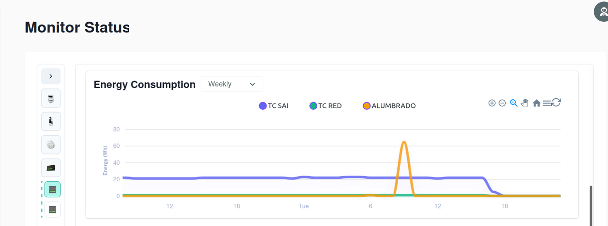
Alarmas¶
Cualquier dispositivo tiene un bloque Configured Alarms donde se definen avisos sobre sus datos, y un bloque Alarm Events con las alarmas que se han disparado.
Al pulsar Add alarm se configura una alarma nueva:
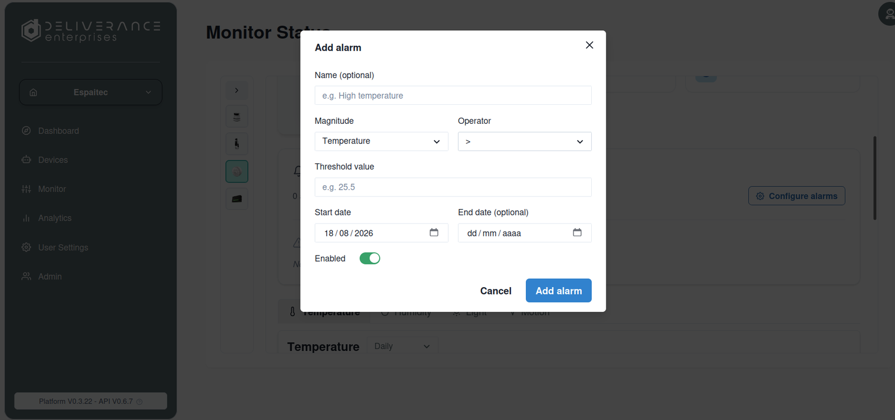
- Name: nombre descriptivo (opcional).
- Magnitude: qué dato se vigila (por ejemplo, la temperatura de un sensor).
- Operator y Threshold value: la condición que dispara la alarma (por ejemplo, mayor que 25,5).
- Start date y End date: periodo en el que la alarma está vigente. La fecha de fin es opcional.
- Enabled: permite desactivar la alarma temporalmente sin borrarla.
Lista de tareas (solo robots)¶
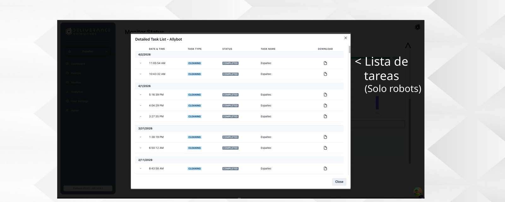
Desde el detalle del dispositivo se puede abrir el listado completo de tareas ejecutadas, con fecha, tipo de tarea, estado, nombre y descarga del reporte.
Detalle de las tareas¶
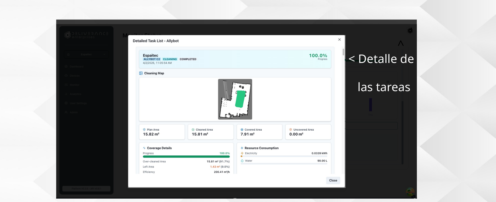
Cada tarea puede consultarse en detalle: progreso, mapa de la operación (en tareas de limpieza), área planificada/cubierta, y consumo de recursos cuando aplica.